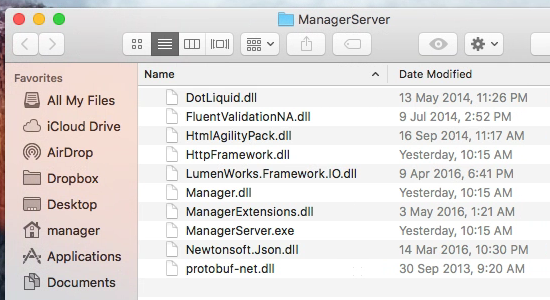
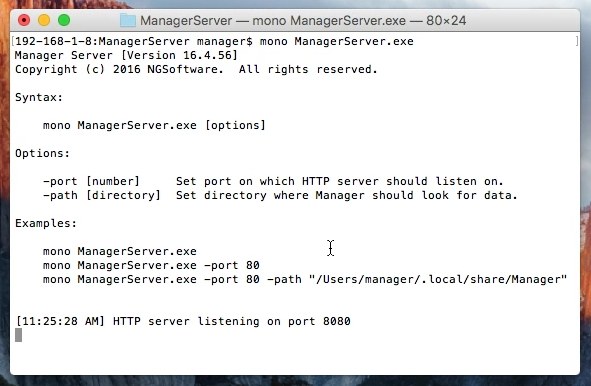
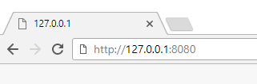

Manager requires Mono to be installed on Mac OS X. Download Mono from http://www.mono-project.com/download/#download-mac and install it on your Mac.
Download the latest version of Manager Server from https://mngr.s3.amazonaws.com/{{ release.version }}/ManagerServer.zip.
Unzip ManagerServer.zip to desired folder.

Launch Terminal app, navigate to the folder where you have unzipped contents of ManagerServer.zip and launch the server with following command:
mono ManagerServer.exe
When you launch the server, the last line should say:
HTTP server listening on port 8080
By default, Manager Server will listen on port 8080. Open your web-browser and navigate to http://127.0.0.1:8080.

You should see login screen.
Default administrator password is empty so just click Login without entering any password.
Manager Server is basically a web server so setting up access from other computers on local network or Internet is the same as with any other web server. If you are not familiar how web servers work, consider signing up for cloud edition instead. Cloud edition works exactly the same as server edition without IT hassles.